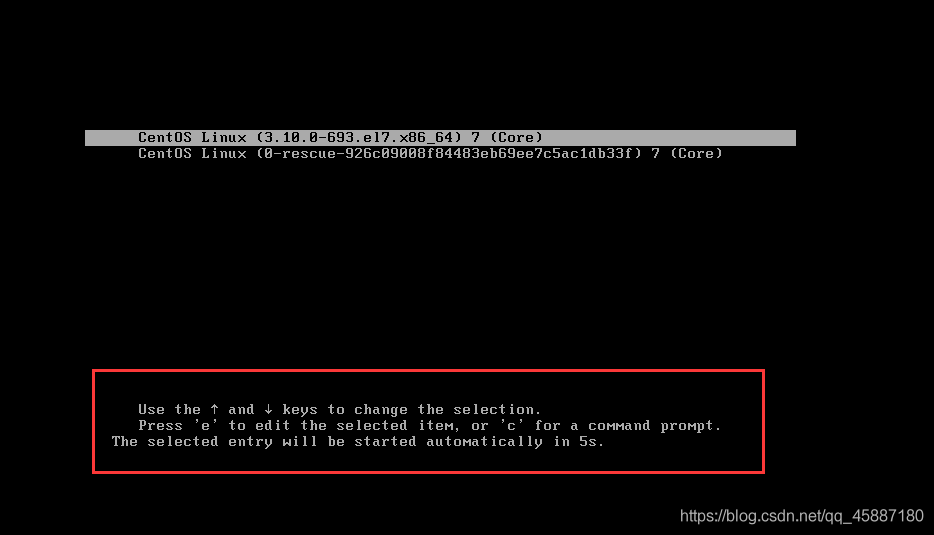
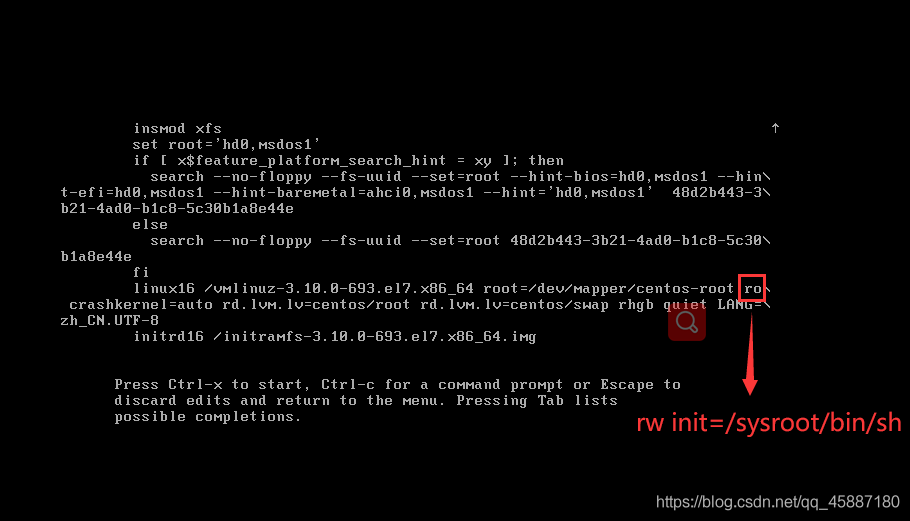
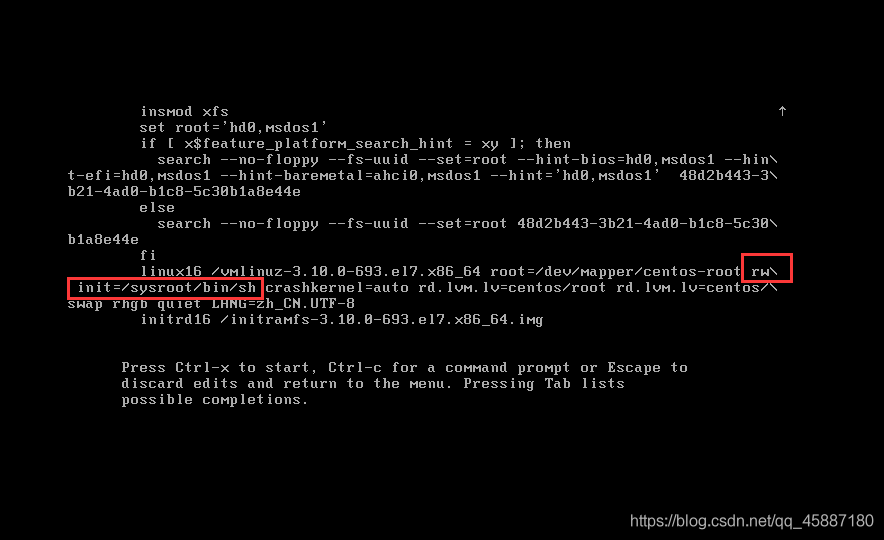
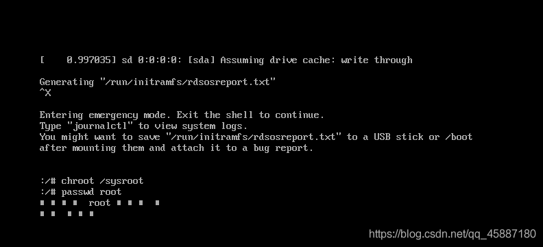
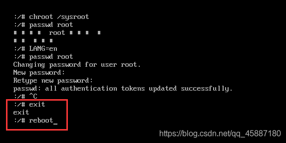

CentOS7忘记root密码
⚡️ 问题
实验室服务器添加磁盘，需要root账号的权限，但root账号密码没人知道，此时需要重置root密码
🌀 重启CentoOS7
在服务器真实物理设备上进入重启页面后，选中较短的CentOS行，按e进入编辑模式
🌴 进入编辑模式
找到ro crashkernel…项，将ro改成rw init=/sysroot/bin/sh
修改后
🐸 单用户模式重置码
按ctrl+x进入单用户模式
执行命令chroot /sysroot访问系统，并使用passwd修改root密码
输入两次密码，当出现successfully的时候说明重置成功
🐯 更新系统信息
执行命令touch /.autorelabel，在/目录下创建一个.autorelabel文件，如果该文件存在，系统在重启时就会对整个文件系统进行relabeling重新标记
1 | |
🐫 重启系统
先exit 然后 reboot
重启后，即可用root账号和新设置的密码完成登录了
CentOS7忘记root密码
http://example.com/2022/10/07/CentOS7忘记root密码/